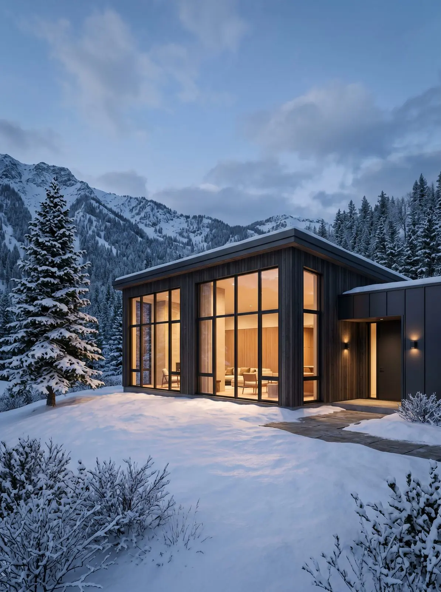

Termimax. L'inverno lo senti solo dal calendario.
Massima prestazione termica, triplo vetro, per zone fredde ed esposizioni a nord.
A chi vive in zona fredda, a chi ha la casa esposta a nord, a chi vuole tagliare la bolletta in modo deciso. È il profilo delle ristrutturazioni con riqualificazione energetica spinta.
Sistema a quattro camere con barretta in poliammide da 44 mm, anima isolante schiumata e triplo vetro di serie. Vista del profilo 82 mm in chiusura.
Sul Termimax lavoriamo molto anche sul nodo di posa: il telaio da solo non basta, è l'insieme che fa il risultato.
I dati che contano.
| Parametro | Valore | Norma |
|---|---|---|
| Trasmittanza termica Uw | 0,9 – 1,1 W/m²K | EN ISO 10077-1 |
| Abbattimento acustico Rw | fino a 44 dB | EN ISO 717-1 |
| Tenuta all'aria | Classe 4 | EN 12207 |
| Tenuta all'acqua | Classe 9A | EN 12208 |
| Resistenza al vento | Classe C5 | EN 12210 |
| Antieffrazione | RC2 disponibile | EN 1627 |
Anta singola fino a 1.400 × 2.700 mm.
Battente, anta-ribalta, vasistas. Compatibile con scorrevole e alzante in versione termica.
Le stesse del Safe Window: RAL, effetto legno, strutturate, bicolore.
Valori indicativi dalle schede tecniche. I dati certificati (DOP) sono nell’area architetti.
In showroom si tocca.
Aperto e chiuso, nelle finiture vere. Ti spieghiamo pregi e limiti senza fretta.
Domande frequenti
Il Termimax sta in qualsiasi muro?
Serve sempre il triplo vetro?
Dove installiamo
Da Vigano di Gaggiano a Milano Sud e Milano Ovest, con i nostri tecnici e i nostri posatori.